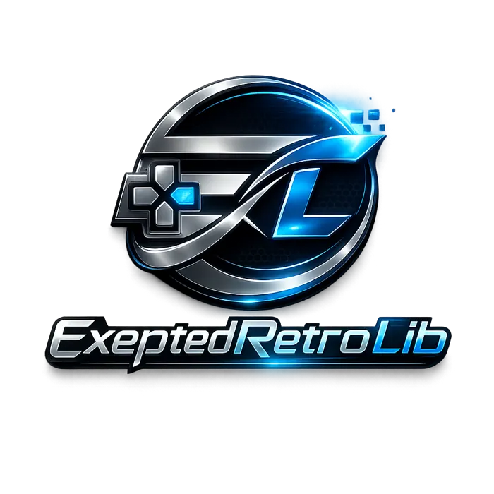

Tu biblioteca retro.
A tu manera.
Organiza tus plataformas, elige tus propios archivos de juego autorizados y ajusta los controles y el rendimiento a tu dispositivo.
Disponible próximamente en Google Play. Esta página no ofrece ROMs, BIOS ni juegos. Cuando Google apruebe la app, añadiremos aquí el enlace oficial de descarga.

Funciones que facilitan jugar
Una experiencia práctica, personalizable y sin seguimiento publicitario.
Recomendaciones locales según tu hardware y los sistemas que ya exploraste, sin cuenta de usuario.
El panel de tres ranuras se puede mostrar u ocultar, si el núcleo permite guardar estados.
Aprende a importar archivos autorizados, ajustar controles, manejar guardados y resolver dudas.
Separa favoritos, progresos y preferencias en el mismo Android.
Detecta características del dispositivo para proponer ajustes de compatibilidad o calidad.
Sin anuncios, suscripciones ni compras integradas. Los núcleos se incluyen en la instalación.
4 plataformas compatibles
La compatibilidad con juegos concretos depende del núcleo, formato y hardware; no se garantiza que todos los archivos funcionen.
Antes de empezar
¿Incluye juegos o BIOS?
No. Debes usar únicamente archivos que tengas derecho a utilizar.
¿Puedo jugar sin Internet?
Los motores se encuentran dentro de la aplicación; algunas funciones externas o enlaces requieren Internet.
¿Qué teléfonos son compatibles?
Android 6.0 o posterior como requisito mínimo del paquete. Los sistemas exigentes pueden requerir más recursos y no funcionar bien en todos los equipos.
¿Mis partidas se sincronizan?
No. Los datos son locales y pueden perderse si borras almacenamiento o desinstalas la app.